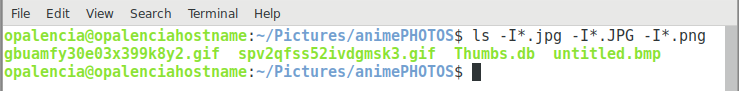

Mostrar carpetas y archivos > ls¶
Nombre del comando: ls
Man page online: https://linux.die.net/man/1/ls
Descripción: Mostrar el contenido de un directorio o carpeta.
Man page local: $ man ls o $ man ls > ls.txt
Instalado por defecto: Sí, al menos en Debian.
Algunas Opciones:
-a, --all Ignore las entradas que comienzan con ., es decir, mostrar los archivos ocultos también.
-l Usar un formato de listado largo (permisos, usuario, grupo, etc.).
-t Ordenar por tiempo de modificación, el más reciente primero.
-I, --ignore=PATTERN No muestre las entradas implicadas que concuerden con el patrón de shell.
Ejemplo 1: $ ls -a, mostrará todos los archivos y carpetas, incluidos los ocultos.
Ejemplo 2: $ ls -l, mostrará todos los archivos y carpetas en formato de listado largo.
Ejemplo 3: $ ls -I*.jpg -I*.JPG -I*.png, este ejemplo omitirá todos los archivos que terminen en .jpg, .JPG y .png, se puede ver que es posible agregar varias opciones en una sola línea.
Ejemplo 4: $ ls *.png, que muestre todos los archivos con extensión .png únicamente. Éste ejemplo es muy útil al buscar por la extensión de los archivos.